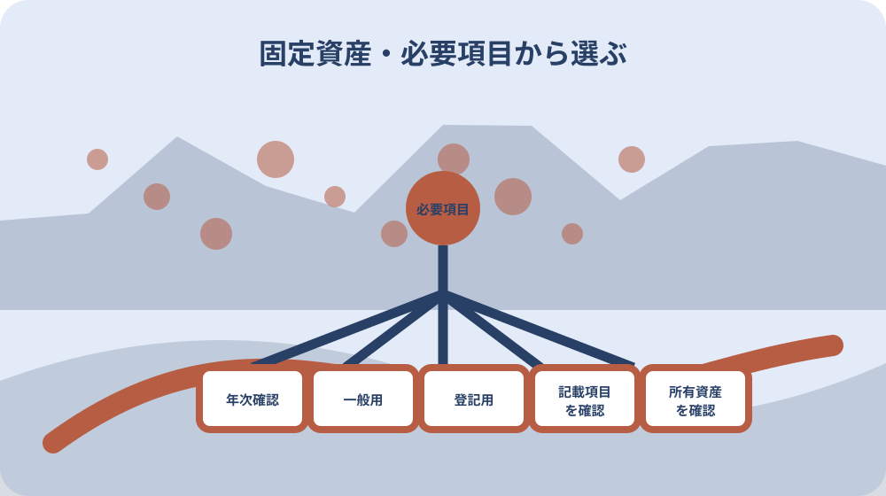
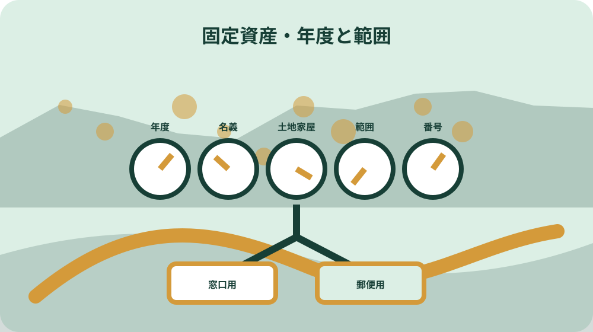

先に結論を確認する
この記事の答え：提出先が求める書類名、必要項目、年度、対象物件、原本・写しを先に確認します。毎年の課税物件を一筆一棟で確認するなら手元の課税明細書、申請交付される評価証明書を指定されたなら森町の固定資産関係申請書を使います。名称が指定されていない場合は、提出先と税務課資産税係へ必要項目を伝えて確認します。
森町で最初に照合する条件：提出先から受けた案内を『必要な書類名』『必要項目』『対象年度』『対象物件』『原本・写し』の五列へ分ける。
提出先の要求を五列へ分けて書類を選ぶ
固定資産に関する書類を求められたら、最初に申請書へ丸を付けるのではなく、提出先の要求を五列へ分けます。列は、必要な書類名、必要項目、対象年度、対象物件、原本か写しかです。『固定資産の証明を持ってきてください』という一言だけでは、評価証明書、評価通知書、公課証明書、資産証明書、課税明細書のどれかを決められません。
提出先が書類名を指定した場合も、年度と物件範囲を確かめます。同じ土地でも前年度と現年度では申請欄が違い、土地だけか家屋も含むか、一部の地番か全部かで記入内容が変わります。書類名だけを聞いて帰らず、何の項目を確認するために必要かまで尋ねます。必要項目の列には『評価額など』と丸めず、提出先が用いた項目名をそのまま書きます。受理期限や発行後何か月以内という条件を示された場合は、原本・写しの列の隣へ期限欄を追加します。期限の根拠にした案内名と回答日も同じ行へ残し、別案件の日付を転用しません。
森町の固定資産関係申請書には、申請理由として融資申込、保証人、登記、競売申立、税務署提出、その他の欄があります。この選択肢は提出目的を申請書へ戻す入口です。ただし、目的欄に丸を付ければ書類の適否が自動で決まるわけではありません。
この記事では、提出先の五列と森町の申請欄を対応させる書類ルーティング表を完成させます。税額の妥当性を判定したり、登記や相続の手続結果を保証したりする記事ではありません。迷った欄は推測で埋めず、提出先と森町税務課資産税係の双方へ確認します。
課税明細書と申請交付の四証明を入口で分ける
最初の分岐は、毎年送られる書類か、必要なときに申請して交付を受ける書類かです。森町は5月中旬に納税義務者へ納税通知書を送り、課税対象となった土地・家屋の課税明細書を同封すると説明しています。課税明細書はこの年次送付の流れにあります。
一方、評価証明書、評価通知書、公課証明書、資産証明書は、固定資産関係の証明書交付申請書で種類を選ぶ書類です。森町公式の発行一覧でも四つは別々の項目で、料金や名称が同じではありません。手元にある課税明細書の写しを提出することと、新たに証明書を申請することを同じ扱いにしません。
地方税法第382条の3は、所定の請求があった場合に、市町村長が固定資産課税台帳の所定事項について証明書を交付することを定めています。これは証明書交付の法的な土台です。毎年届く課税明細書と、請求により交付される証明書の取得経路を分ける理由にもなります。
ルーティング表の取得経路欄には『手元の年次書類』か『森町へ交付申請』のどちらかを書きます。課税明細書を紛失しているのに手元書類へ丸を付けたり、提出先が課税明細書で足りると言っているのに別証明を決め打ちしたりしないための分岐です。
課税明細書は一筆一棟の年次確認に使う
森町公式は、課税明細書に土地・家屋の所在・地番、価格、課税状況などを一筆一棟ごとに記載すると説明しています。その年度に課税対象となった物件と記載内容を手元で確かめる場面では、まず課税明細書の該当行を確認できます。
ただし、課税明細書が手元にあることと、提出先がその書類を証明として受け付けることは別です。提出先が評価証明書の原本や特定年度の公課証明書を指定したなら、似た数字が明細に見えても代用できると判断しません。必要項目と受理条件を提出先へ戻します。
森町は課税明細書を再発行できないと明記しています。紛失時に『同じ明細をもう一度出してもらう』という経路は選べません。必要なのが価格、税額、所有物件の情報のどれかを整理し、別の証明書や閲覧資料で対応できるか税務課資産税係へ相談します。
課税明細書に載る物件だけから親の全資産を確定する作業は、本稿の範囲外です。免税点や名寄帳を含めた資産探索は既存の名寄帳記事へ分けます。本稿では対象物件が分かっており、その一筆・一棟について提出書類を選ぶ場面に限定します。
評価証明書は一般用という申請欄から確認する
森町の証明書交付申請書は、評価証明書を『一般用』と表示し、料金を300円としています。土地か家屋か、一部か全部かを選び、年度、部数、物件の表示を記入する構成です。評価証明書を選ぶときは、提出先が評価に関する証明を求めているかを先に確かめます。
『一般用』は幅のある表示なので、融資、保証、税務署提出など目的名だけで必要項目を決めつけません。提出先に、価格の記載が必要か、対象物件を限定するか、何年度分か、原本が必要かを聞きます。その回答を五列表へ移してから評価証明書欄と照合します。
申請書では土地・家屋と一部・全部が独立した選択肢です。一つの地番だけを求められているのに『全部』を選ぶ、土地の証明だけが必要なのに家屋も含める、といったずれを避けます。対象地番と家屋番号は登記資料や提出先資料と見比べます。
評価証明書の名称から、必ず特定の手続に使えると断定しません。提出先が別様式や発行期限を定めている場合があるためです。森町が交付できる証明の範囲と、提出先が受理する条件を別々に確認し、双方が一致したときに第一候補とします。
評価通知書は登記用・無料の欄へ送る
森町の申請書は評価通知書を『登記用』と明記し、料金を無料としています。評価証明書の一般用とは別の番号です。登記という語が提出目的に含まれる場合は、評価証明書を慣例で選ばず、まず評価通知書欄を候補にします。
登録免許税法第10条は、不動産登記の場合の課税標準となる不動産の価額を、登記時の不動産の価額によると定めています。これは登記と不動産価額が結び付く法的な背景です。ただし、個別登記で何を添付するかは、条文名だけから家庭で決めません。
申請前に法務局、司法書士など実際の提出先・手続担当者へ、登記の種類、対象物件、年度、必要な書類名を確認します。森町の申請書に登記用とあることは公的事実ですが、どの登記でも必ず同じ書類だけで足りると広げないことが重要です。
ルーティング表では『登記』の行に、提出先の回答日と担当、求められた書類名を記します。その回答が評価通知書なら森町の登記用欄へ進み、評価証明書など別名を指定されたなら、違いを再確認します。無料という料金差だけで書類を選びません。
公課証明書は名称で記載項目を決めつけない
森町の申請書は公課証明書を評価証明書とは別番号にし、300円と表示しています。土地・家屋、一部・全部、年度、部数、物件表示を記入する欄があります。提出先が公課証明書と明記した場合は、この独立した申請欄へ送ります。
一方、『税額が分かるもの』『課税内容が分かるもの』という説明だけなら、公課証明書だと即断しません。課税明細書、公課証明書、固定資産関係の別証明で確認できる項目が重なって見えるからです。必要な項目名と証明の形式を提出先へ聞き直します。
公課証明書という名称から記載項目を本稿が独自に列挙することもしません。森町公式の発行一覧と申請書は種類を分けていますが、提出先ごとの利用可否まで保証していません。最新の証明内容は、対象年度と物件を示して資産税係へ確認します。
表には『提出先の指定語』『必要項目』『森町へ確認した証明名』の三列を並べます。最初の二列と三列が一致しない場合は申請を止めます。公課証明書を取ってから不要だったと分かる往復を減らすための確認です。
資産証明書は名寄帳や評価証明と分けて尋ねる
森町公式の一覧は資産証明書を1納税義務者につき300円とし、評価証明書、公課証明書、名寄帳の閲覧とは別に掲載しています。申請書でも資産証明書は独立した番号で、年度、部数、土地・家屋の物件表示欄があります。
『所有している資産を確認したい』という言葉だけでは、資産証明書、名寄帳、課税明細書のどれが合うか決まりません。提出用の証明が必要なのか、家族が全物件を洗い出したいのか、特定地番を確かめたいのかに分けます。本稿が扱うのは提出用書類の選択です。
名寄帳は森町公式一覧で『閲覧』と表現され、固定資産関係の証明書交付申請書とは別に公簿閲覧申請書も用意されています。証明書交付と閲覧を同じ申請だと思わないよう、提出先が証明書を求めるのか、調査のための閲覧でよいのかを確かめます。
提出先から資産証明書の指定がない場合は、必要項目を税務課へ読み上げ、どの資料で確認できるか尋ねます。『資産』という広い名称を根拠に、課税されていない物件も含めてすべて載ると推測しません。網羅調査は名寄帳記事へ分離します。

年度・名義・物件範囲を一行ずつ固定する
書類の種類を決めた後は、年度、納税義務者の名義、対象物件を一行ずつ固定します。森町FAQは固定資産関係の証明を1証明・1納税義務者・1年度につき300円と案内しています。複数年度を一枚分の手数料と見込まないようにします。
単有名義と共有名義については、それぞれ手数料が必要と森町が案内しています。家族が同じ建物だと見ていても、単有と共有を一つの名義へまとめません。納税通知書、登記事項、提出先資料で表記が違う場合は、違いを残して資産税係へ確認します。
物件範囲は、土地・家屋、一部・全部、地番・家屋番号へ分けます。申請書の物件表示欄は、森町の地番と家屋番号を書く構成です。住所だけを伝えて対象物件が確定したと考えず、提出先が必要とする物件単位と合わせます。
年度欄には『今年』ではなく年度を数字で書き、提出先へ基準時点も確認します。契約日、相続開始日、登記申請日など出来事の日付と、証明を求める年度は同じとは限りません。分からなければ候補年度を並べず、回答を得て一つずつ申請します。

本人・同居親族・代理人・相続人を分ける
森町の申請書は申請者資格を、本人、同居の親族、代理人、相続人、その他に分けています。窓口へ行く人と、証明してほしい所有者・納税義務者は別欄です。家族が代わりに行く場合も、申請者と証明対象者を同一人物のように書きません。
森町公式の発行一覧は、本人・同一世帯親族以外の申請では委任状が必要と案内しています。現在町外に住む人は、町外で住民票上同一世帯でも委任状が必要と明記されています。以前同居していたという事情だけで省略できると判断しません。
相続人の場合は、相続権を確認できる戸籍謄本や遺産分割協議書等が必要になると森町が案内しています。亡くなった所有者の納税通知書を持っていることだけで申請資格が確定するわけではありません。現在の関係と必要書類を事前に確認します。
法人名義の証明では、法人印または委任状に関する案内があります。個人の家族申請と法人の担当者申請を同じ持ち物表へ入れません。申請者資格ごとに、本人確認、委任、相続確認、法人確認の列を分けます。
窓口申請と郵便請求の書類束を分ける
森町公式は固定資産関係の証明を窓口と郵便で取得できると案内しています。窓口用の証明書交付申請書と、郵便請求用の申請書は別ファイルです。窓口へ行けないから同じ申請書を封筒へ入れる、という準備はしません。
郵便請求では、申請書、本人確認書類の写し、返信用封筒、手数料分の定額小為替を用意します。申請者が代理人や相続人なら、委任状や相続関係を確認できる書類も関係します。送付前に最新の案内と必要額を確認します。
郵便申請書には、証明の種類、年度、部数、使用目的、固定資産の地番・家屋番号を記載するよう森町が案内しています。未確定の物件を『全部』で送って町側に選んでもらうのではなく、提出先の要求と所有者名義を照合してから封入します。
書類束の表紙には、申請経路、証明種類、年度、名義、物件、部数、手数料、同封物を置きます。窓口なら持参物、郵便なら同封物と返送先を分けます。発送日は証明の発行日ではないため、受領予定に余裕を持たせます。
提出先の回答と森町の申請欄を往復照合する
一度提出先へ聞いただけで終わらず、その回答を森町の申請欄へ当てはめた後、名称がずれたらもう一度戻ります。提出先が『評価額が分かる書類』、森町側の候補が評価証明書と評価通知書の二つなら、利用目的と受理書類名を具体化します。
確認時は、対象の森町内物件、年度、土地か家屋か、単有か共有か、一部か全部かを読み上げます。『固定資産の書類』だけでは担当者も条件を絞れません。回答日、窓口名、回答した書類名をルーティング表へ残します。
提出先が写しでよいと言った場合も、個人番号や他物件情報が不要に写らないか確認します。課税明細書は複数物件が一枚に並ぶ場合があります。必要範囲を超える情報を安易に渡さず、提出方法は相手方の案内へ従います。
森町のページ更新日と申請書の版も記録します。手数料、委任状、郵便物は変更される可能性があります。保存した古いPDFだけを見て申請せず、提出直前に公式ページから現行ファイルを開き直します。
大石の視点：書類名ではなく必要項目から逆算する
ここまでの証明種類、料金、申請資格、郵便請求物、課税明細書の記載と再発行不可、法令の条文は、公的資料で確認できる事実です。ここから述べる五列表と往復照合の順番は、私、大石浩之が家族の不動産書類を取り違えないために提案する実務上の方法で、森町の公式見解ではありません。
私は提出先から書類名を聞けなかったとき、『とりあえず評価証明』とは書きません。必要項目、年度、物件、原本・写しを質問し、その回答を森町の四つの申請欄と課税明細書へ当てます。該当が二つ残れば、提出先と資産税係へ同じ条件を伝えて絞ります。
料金が無料だから評価通知書、手元にあるから課税明細書、名前が広そうだから資産証明書、という選び方もしません。費用や入手しやすさは、受理される書類を確定した後の条件です。先に必要項目を固定すれば、不要な証明を取る往復を減らせます。
完成したルーティング表には、提出先の要求、森町で選ぶ書類、年度、名義、物件範囲、申請資格、取得経路、確認日が一行でつながります。最終判断は提出先と森町の回答に戻し、表はその二つの回答を混同せず家族へ渡すために使います。